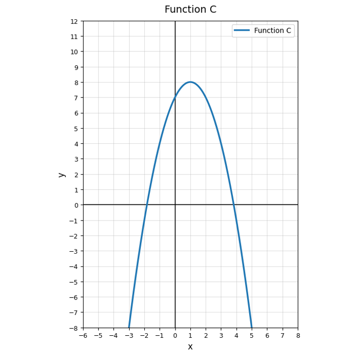
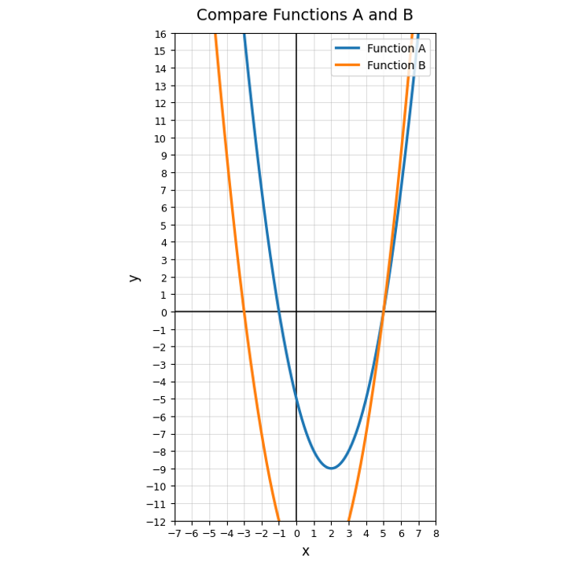

Which equation is written in vertex form?
Which equation is written in factored form?
You need the vertex of $y=(x+4)^2-6$. Explain why vertex form is efficient and identify the vertex.
Two students are analyzing $y=(x-3)(x+1)$. One wants the zeros; the other wants the vertex. Explain why the same form may be useful for one student but not the other.
Find the zeros of $y=(x+7)(x-4)$.
Use Function C. Does the graph have a maximum or minimum? Explain how you can tell visually.

What does an $x$-intercept tell you about a quadratic function?
Solve.
$$(x-5)(x+3)=0$$
Write a factored equation with zeros $2$ and $9$.
Use the graph comparing Function A and Function B. Which function appears to have a smaller minimum value? Explain using the graph.

A classmate says every quadratic has two visible $x$-intercepts. Critique this statement using a graph or equation example.
Create a short context where the zeros of a quadratic would matter more than the vertex. Explain why.
Which expression is a perfect square trinomial?
Factor completely.
$$x^2-144$$
Sort the cards by the feature or form they reveal most quickly.
A student factors $x^2-12x+36$ as $(x-6)(x+6)$. Explain the mistake and give the correct factorization.